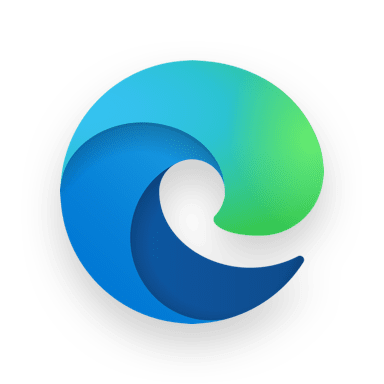

请访问原文链接：Firefox 150, Chrome 150, Chromium 150 官网离线下载 (macOS, Linux, Windows) 查看最新版。原创作品，转载请保留出处。
作者主页：sysin.org
天下只剩三种（主流）浏览器：
- Apple Safari
- Mozilla Firefox
- Google Chrome（Chromium）【国外各种（Microsoft Edge、Opera…），国产各种…】
Safari 下载：
- Apple Safari 26.6 - macOS 专属浏览器 (独立安装包下载)
- Apple Safari 18.6 - macOS 专属浏览器 (独立安装包下载)
- Apple Safari 17.6 - macOS 专属浏览器 (独立安装包下载)
- Apple Safari 16.5 - macOS 专属浏览器 (独立安装包下载)
如何屏蔽自动更新：
- 如何禁用 Firefox 自动更新 (macOS, Linux, Windows)
- 如何禁用 Google Chrome 自动更新 (macOS, Linux, Windows)
- 如何禁用 Microsoft Edge 自动更新 (Windows, Linux, macOS)
Mozilla Firefox 下载
Release Notes：https://www.mozilla.org/en-US/firefox/releases/
备注：Firefox 区分界面语言，需要英文版将链接后缀 zh-CN 替换为 en-US 即可。
Firefox 150 存档：
Firefox 145 存档：
Firefox 140 存档：
Firefox 135 存档：
Firefox 130 存档：
Firefox 120 存档：
Firefox 115 存档：
Firefox 110 存档：
Firefox 105 存档：
Firefox 100 存档：
下载最新版（固定链接）：
macOS
Linux
Windows
如何下载指定版本：
- 将下载链接中的 latest 替换为版本号，例如：150.0
- 或者访问 Firefox Release Download
Google Chrome 下载
Chrome 150 存档：
Chrome 145 存档：
Chrome 140 存档：
Chrome 135 存档：
Chrome 130 存档：
Chrome 120 存档：
Chrome 115 存档：
Chrome 110 存档：
Chrome 105 存档：
Chrome 100 存档：
备注：Chrome 内置多国语言界面。
Chrome macOS 最新稳定版固定下载地址：
Chrome for macOS for Intel chip (sysin) (已停止更新，现在与下面链接相同)
Chrome for macOS for Apple chip & Intel chip
Chrome Linux 最新稳定版固定下载地址：
Chrome Windows 最新版（3 种）下载地址：
Windows System Setup 最新稳定版固定下载地址
(安装在 Program Files 文件夹下，需要管理员权限安装，直接双击报错，要求以管理员身份运行)
Google Chrome System Setup x86 - 32bit
Google Chrome System Setup x64 - 64bit
Google Chrome System Setup Arm64
替代地址（hash 不同，文件内容相同，双击提示会输入管理员密码）：
https://www.google.com/chrome/?system=true&standalone=1&platform=win
https://www.google.com/chrome/?system=true&standalone=1&platform=win64
https://www.google.com/chrome/?system=true&standalone=1&platform=win_arm64替代地址（hash 不同，文件内容相同，双击提示会输入管理员密码，不输入会继续安装到当前用户目录下）：
此版本可以说是介于 System Setup 和 User Setup 之间，或者说是二合一版本。
https://www.google.com/chrome/?standalone=1&platform=win
https://www.google.com/chrome/?standalone=1&platform=win64
https://www.google.com/chrome/?standalone=1&platform=win_arm64Windows User Setup (安装在 Users 文件夹下)
亦称为 Google Chrome for single user account，需要文明访问。
无固定连接，可以搜索第三方网站查看无需文明访问的链接 (sysin)。
更简单的方法是，解压上面的 ChromeStandaloneSetup*.exe 得到例如 150.0.7871.47_chrome_installer.exe 的文件即真正的单用户版本。
以上三种链接下载的文件解压后的 x.x.x.x_chrome_installer.exe 文件 hash 完全相同。
用户版不带自动更新程序。解压即为绿色版。
Windows MSI 安装包，企业版
Chromium 下载
Chromium 150 存档：
Chromium 145 存档：
Chromium 140 存档：
Chromium 135 存档：
Chromium 130 存档：
Chromium 120 存档：
Chromium 115 存档：
Chromium 110 存档：
Chromium 是一个开源浏览器项目，旨在构建一个更安全、更快、更稳定的方式让所有互联网用户体验网络。通常发行版被称为 ungoogled-chromium 即不依赖 Google 服务的 Chromium 浏览器。
Chrome 是由 Google 开发和维护的浏览器。它是专有的，任何人都可以免费下载和使用它。但代码不能被反编译、逆向工程或利用来创建其他项目。
Chromium 不仅是另一种浏览器，还是生成 Chrome 所基于的源代码的开源项目。2008 年，谷歌将 Chrome 的一大段源代码作为 Chromium 发布，以鼓励开发者审查底层代码 (sysin)。它还让他们将浏览器移植到 Linux 和 Mac。谷歌开发人员获取 Chromium 源代码并添加他们的专有代码 - 从而导致 Chrome 具有比 Chromium 更多的功能和附加组件。例如，Chrome 更新可以自动跟踪浏览数据并提供对 Flash 的原生支持。Chromium 没有这些功能。
Chrome 和 Chromium 两种浏览器的差别主要如下：
AAC, H.264, and MP3 Support：Chrome 包含针对这些专有媒体格式的许可编解码器，让您可以访问更多种类的媒体内容，尤其是使用 HTML5 视频流式传输 H.264 视频的网站 (sysin)。两种浏览器都包含基本的免费编解码器：Opus、Theora、Vorbis、VP8、VP9 和 WAV。这点应该是 Chrome 相对 Chromium 的最大优势。
Adobe Flash (PPAPI)：Chrome 包括一个沙盒 Pepper API (PPAPI) Flash 插件，谷歌会自动与 Chrome 一起更新。这是 在 Linux 上获得最新版本 Flash 的唯一途径 。即使在 Windows 和 Mac 上，您最好使用 Chrome 的沙盒 PPAPI Flash 插件，而不是 Adobe 网站提供的旧 NPAPI Flash 插件。（您实际上可以从 Chrome 获取 Pepper Flash 插件，然后安装它并在 Chromium 中使用它，如果您愿意的话。）Flash 已经寿终正寝，除非你真的需要，这对 Chromium 来说可能影响甚微。
Auto Update：Chrome 的 Windows 和 Mac 用户可以获得一个额外的后台应用程序，可以自动使 Chrome 保持最新状态。Linux 用户使用他们的标准软件管理工具。Chrome 的自动更新虽然有方法禁用，但是禁用后会提示浏览器过期，Chromium 无此功能，更加清静 (sysin)。
Extension Restrictions：对于 Chrome，Google 会禁用未托管在 Chrome 网上应用店中的扩展程序。Chromium 可以使用任何网站的扩展，当然这种灵活性也可能增加安全性风险。
Crash and Error Reporting：Chrome 用户可以选择将崩溃和错误的统计信息发送给 Google 进行分析。Chromium 无此功能。
Captures browsing data and history：Chrome 自动收集信息并将其传输给 Google。此信息可能因崩溃报告、使用情况统计信息、设备操作系统等而异。Chromium 不搜集用户信息或者说收集和传输的信息较少。
Sync：Chrome 使用 Google 账号同步配置、浏览历史和扩展等用户数据。Chromium 无同步功能。在国内 Google 需要文明访问，要不然也没有 MS Edge 什么事了。
下载与安装：Chrome 可以在 Google 网站或者大量的第三方下载网站获取。但是安装 Chromium 有点繁琐。安装文件在 Google 网站上不可用，但可以在 Chromium 项目开发社区维护的网站上找到 (sysin)。它已获得 Google 批准，但并非仅由 Google 员工运行。笔者认为这是 Chromium 的最大劣势。
Microsoft Edge 下载
Microsoft Edge 广告越来越多，启动画面惨不忍睹，强烈建议弃用该产品。
需要同步功能建议使用 Firefox，无需同步直接使用 Chrome 原版无需使用山寨版（可文明访问当然也可以同步）。
Edge 就是由 Microsoft 提供服务的 Chromium 发行版。

Microsoft Edge for Mac No udpate (sysin)：
Edge 150 存档：
Edge 145 存档：
Edge 140 存档：
Edge 135 存档：
Edge 130 存档：
Edge 100 存档：
Edge 105 存档：
备注：Edge 源于 Chromium（Chrome）同样内置多国语言界面。
- Windows System Setup（商业版，安装在
Program File文件夹下，需要管理员权限）- Microsoft Edge X64.msi（固定链接，最新版）
- Microsoft Edge X86.msi（固定链接，最新版）
- Windows Arm64 msi（直接访问下载页面，固定链接暂无或未知）
- Windows User Setup（单用户版，安装在 Users 文件夹下，无需管理员权限）
暂无官网固定链接，Edge 自动更新保存在C:\Program Files (x86)\Microsoft\EdgeUpdate\Download文件夹下 - macOS
- Microsoft Edge Universal (Apple Chip)（固定链接，最新版）
- Microsoft Edge 64-bit (Intel Chip)（固定链接，最新版）
- Linux（Edge Linux 首个正式版为 95，官网没有列出，现在新版列出了，以下地址可以下载所有版本）
Apple Safari 下载
请访问：
- Apple Safari 16.5 - macOS 专属浏览器 (独立安装包下载)
- Apple Safari 17.6 - macOS 专属浏览器 (独立安装包下载)
- Apple Safari 18.6 - macOS 专属浏览器 (独立安装包下载)
- Apple Safari 26.6 - macOS 专属浏览器 (独立安装包下载)
更多：HTTP 协议与安全

文章用于推荐和分享优秀的软件产品及其相关技术，所有软件默认提供官方原版（免费版或试用版），免费分享。对于部分产品笔者加入了自己的理解和分析，方便学习和研究使用。任何内容若侵犯了您的版权，请联系作者删除。如果您喜欢这篇文章或者觉得它对您有所帮助，或者发现有不当之处，欢迎您发表评论，也欢迎您分享这个网站，或者赞赏一下作者，谢谢！
 支付宝赞赏
支付宝赞赏  微信赞赏
微信赞赏赞赏一下
敬请注册！点击 “登录” - “用户注册”（已知不支持 21.cn/189.cn 邮箱）。 请勿使用联合登录（已关闭）。